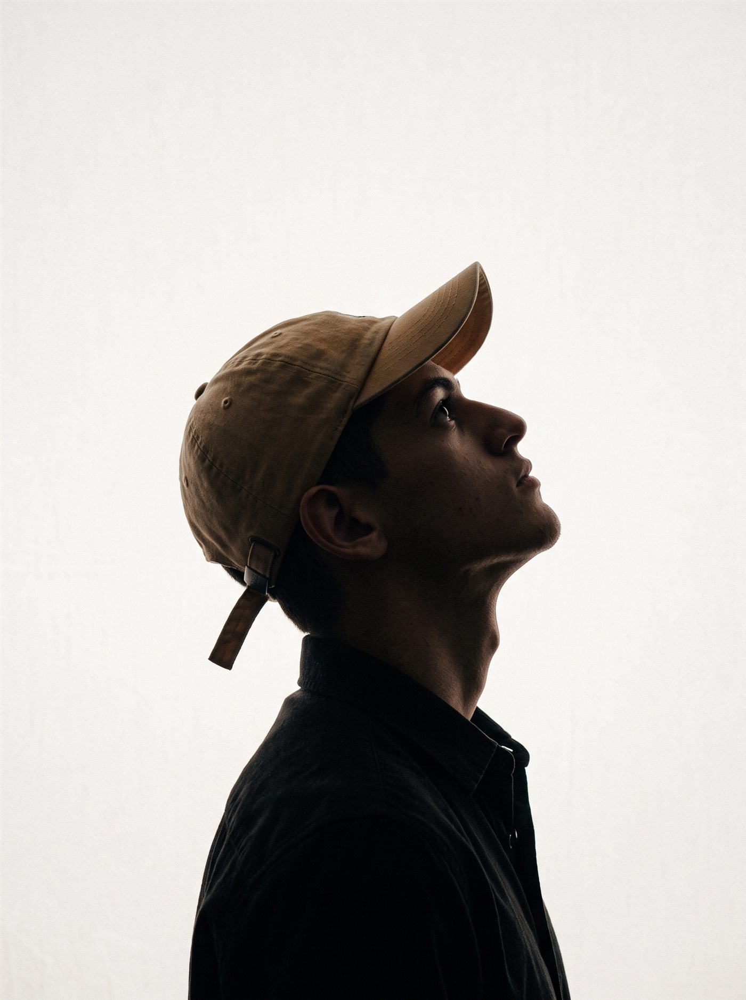
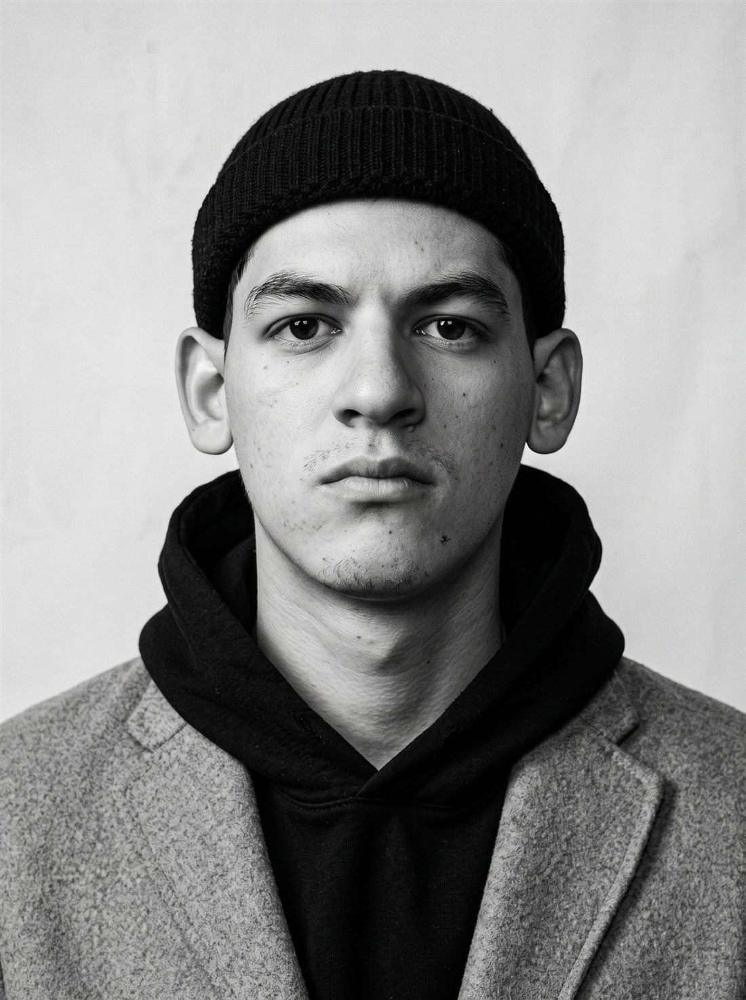
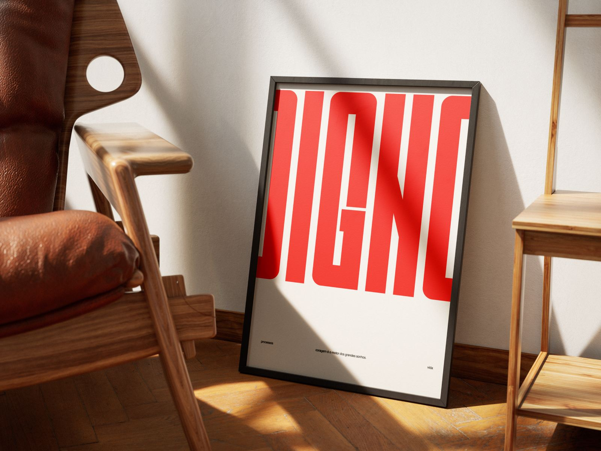
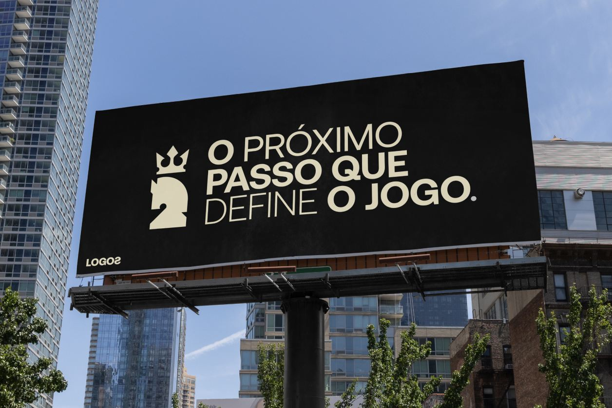
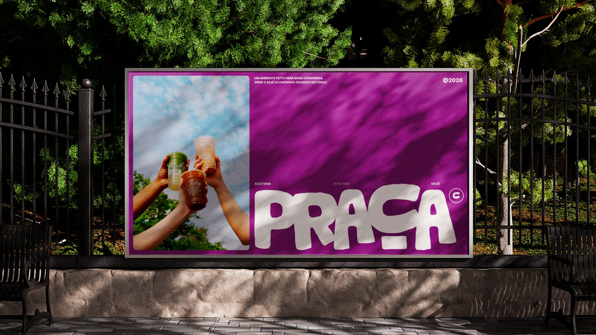

Posicionamento
Entregas
- Diagnóstico da marca e do mercado
- Definição do posicionamento
- Narrativa e mensagem central
O que você ganha
Clareza sobre quem a sua empresa é e por que ela merece ser escolhida.

Pensar. Expressar. Sustentar.
Um manifesto sobre construir marcas.
Escrevo para os aventureiros. Amantes da vitória.
Aqueles que não ficam parados quando o assunto é superar os desafios.
Escrevo para aqueles que nunca desistem, mas sempre persistem em transformar sua realidade.
Aqueles cujas ideias geram desconforto nos acomodados, dúvida nos indecisos e causam movimento no meio da sociedade.
Aqueles que dão o melhor de si para tornar a teoria em prática, e sabem que o futuro está sendo construído hoje.

Lucca Maia
Designer e estrategista de marcas
Unir estratégia com sensibilidade humana é meu dever. Não é só sobre vender mais. É sobre fazer o meu cliente voltar a acreditar no próprio valor.
Estudo sobre marcas
Pensar.Expressar.Sustentar.
Um manifesto sobre construir marcas.
Quatro etapas para tornar a teoria em prática.
Clareza sobre quem a sua empresa é e por que ela merece ser escolhida.
Um caminho claro para o seu negócio, com cada passo feito por um motivo.
Uma marca que comunica o que vale, e um cliente que entende por que investir nela.
Pessoas que se identificam com a sua ideia, e não apenas com o seu preço.

Do Ceará para o mundo: streetwear autoral voltado para o público cristão.

Revelar e potencializar aquilo que já existe no negócio.

Mais que açaí. Um ponto de encontro.
Acreditar nessa ideia e converter o improvável na referência é o que me motiva.
Não simplesmente acreditar,mas investir.
Pois acredito que o futuro é feito de investimentos, e este é feito por todos aqueles que acreditam nessa verdade.
Vamos construir o futuro da sua marca hoje.
Preencha o formulário e eu retorno para conversarmos sobre o próximo passo.
Obrigado por compartilhar a sua ideia. Em breve eu retorno para conversarmos.